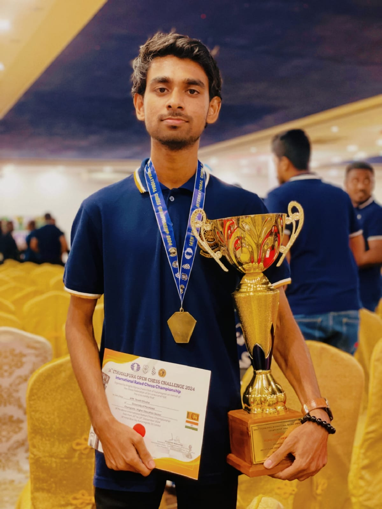
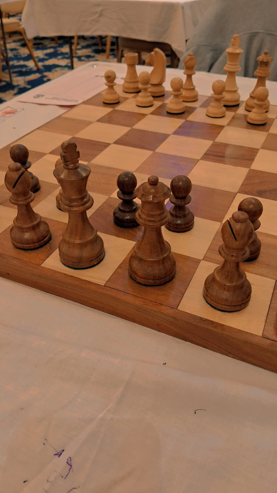

♔
♕
♖
♗
♘
♙
♚
♛
♜
♝
♞
♟
♔
♕
♖
Chess Journey
🏆
University Colours Award 2024
Proudly represented the University of Moratuwa Chess Team and was honored with the prestigious Colours Award in 2024 for outstanding contributions to university sports.
University Team Player
Official member of the University of Moratuwa Chess Team
Strategic Thinking
Chess sharpens my problem-solving and analytical skills in coding
Internationally Rated Chess Player (FIDE)
Officially rated by the World Chess Federation
View FIDE Profile

